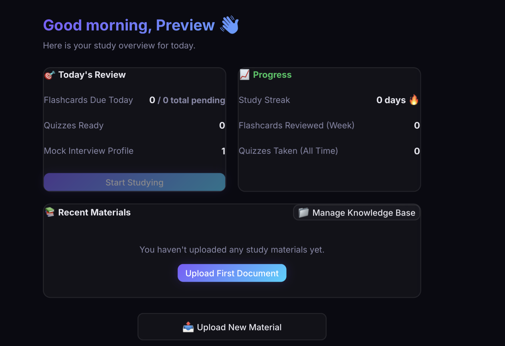
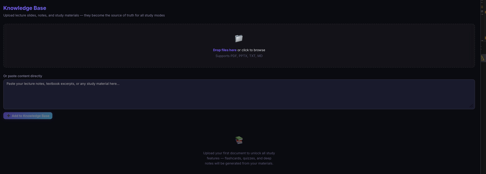
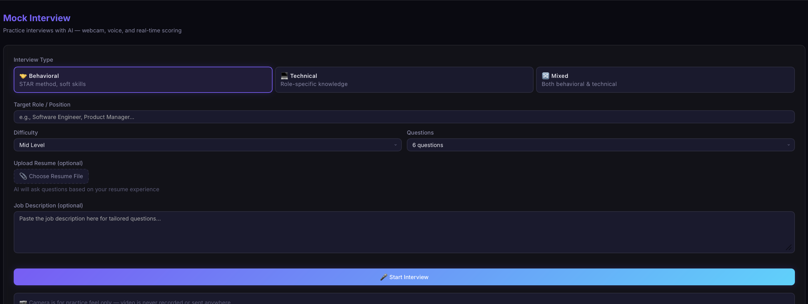
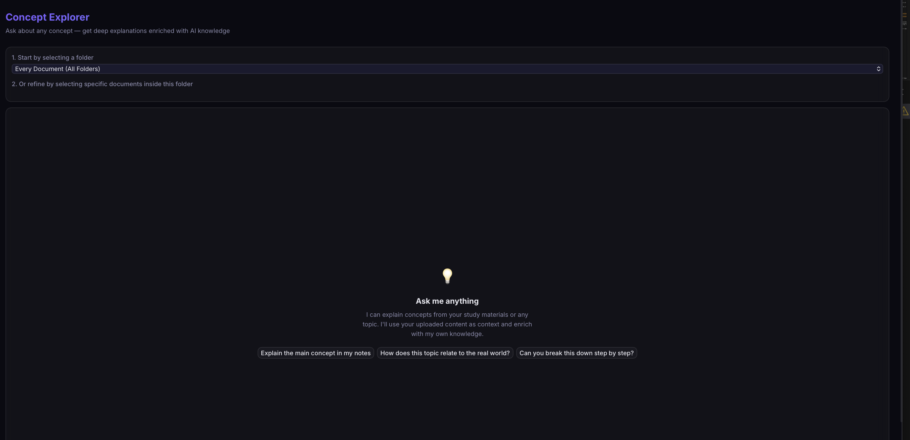

Case Study
LockedIn
Building an AI study workspace around source material — a solo engineering case study about turning lecture material into notes, flashcards, quizzes and study plans, and learning where a prototype AI architecture stops being production-ready.
Executive Summary
I built LockedIn in April 2026 over roughly one month to help myself prepare for finals. The product began with a simple question: could I upload the material I already had and turn it into useful study notes without repeatedly copying context between disconnected tools?
The resulting application is a React and TypeScript single-page app backed by Supabase. It parses PDF, PowerPoint, text and Markdown files in the browser; stores extracted text per authenticated user; and sends selected material to GLM-5 Thinking through NanoGPT's OpenAI-compatible API. From that shared source material, LockedIn can generate deep notes, flashcards, quizzes, study plans, essay support, concept explanations, interview practice and printable cheat sheets.
The most important engineering outcome was not the number of features. It was learning how the same architectural decisions affect product experience, AI reliability and security at once. Browser-side parsing made the prototype private and quick to implement. A bring-your-own-key model kept my costs predictable. JSONB made generated decks easy to persist as single units. Those decisions were appropriate for a personal prototype, but they also created clear production limits: no trusted server boundary for the AI key, no rate limiting, whole-document prompt assembly, and only syntactic — not semantic — validation of model output.
LockedIn was not publicly released and has no public usage metrics. I tested its workflows myself and tested Supabase isolation with multiple accounts. This case study therefore focuses on the system I built, the decisions behind it, the failures I observed and the changes I would make before inviting other people to depend on it.
| Project fact | Detail |
|---|---|
| Role | Solo product designer and full-stack/AI engineer |
| Timeline | Approximately one month, beginning April 2026 |
| Primary users | Me and, by design intent, friends studying similar material |
| Release status | Private prototype; not publicly deployed |
| Core workflow | Upload material → generate study artifacts → review and persist progress |
| Runtime model | GLM-5 Thinking through NanoGPT |
The Problem
My finals workflow was fragmented. Course material lived in PDFs, slide decks, text notes and pasted excerpts. Turning that material into study aids involved several repetitive steps: find the relevant passage, move it into an AI chat, restate the desired format, copy the result elsewhere, and repeat for a quiz or flashcard deck.
The problem was not simply “generate text with AI.” The useful product boundary was a persistent knowledge base that could support several study modes without asking me to re-upload or re-explain the same material each time.
- It had to be fast enough to build before finals, which favoured a small frontend architecture over a custom backend.
- It had to keep source files out of an application-owned file-processing server, which favoured in-browser extraction.
- Generated material had to remain connected to the notes it came from, which led to document selection and source-reference fields.
- It had to support returning over multiple days, which required authentication, persistence and spaced repetition rather than one-off generation.
The tension was that the simplest prototype architecture was not the safest public architecture. I accepted that tension deliberately: LockedIn remained an unreleased, BYOK personal tool while I documented the server-side controls needed for a later version.
Goals and Non-Goals
The initial product goals were to generate useful notes from uploaded material, reuse that same material for flashcards and quizzes, build a study plan around deadlines and available time, make the common path understandable without onboarding documentation, and persist material and progress so I could study across devices.
I later added accounts and interview practice. Accounts changed the architecture more than the interface: every stored object now needed ownership, authentication state and database-level authorization. Interview practice broadened the product beyond finals preparation, but it also became the feature I was most proud of because it combined a multi-turn prompt, resume context, speech recognition, speech synthesis, webcam support and per-answer feedback in one interaction.
Non-goals for this version were equally important:
- Public launch or multi-tenant production operations
- Automated evaluation of model quality
- Vector search or semantic retrieval
- OCR for scanned documents
- Background jobs, reminders or email delivery
- A server-side proxy for AI requests
- Supporting untrusted, high-volume usage
These boundaries explain why some safeguards appear in the future architecture rather than the current implementation.
Product Overview
LockedIn is organized around a shared knowledge base rather than around separate AI chats. The primary flow is: sign in with email and password, upload or paste source material, organize documents into folders and select the relevant sources, choose a study output and its configuration, review the generated result immediately, then save durable artifacts and return to them later.
The original features — notes, flashcards, quizzes and study planning — cover a progression from understanding to recall to scheduling. Later tools reuse the same interaction pattern. The cheat-sheet maker lets the user choose source documents, format, focus topics and a page budget. The interview tool instead accepts a role, job description, resume, interview type and seniority, then runs a spoken multi-turn session.
Centralizing these modes reduced context-switching, but it came with a scope tradeoff. A broader workspace is convenient, while a smaller product would be easier to refine and test deeply. If I restarted the project, I would validate the notes-to-flashcards-to-review loop before expanding the navigation.




Diagram — user journey
flowchart LR
A[Sign up or sign in] --> B[Upload or paste material]
B --> C[Organize documents]
C --> D{Choose study mode}
D --> E[Generate notes]
D --> F[Generate flashcards]
D --> G[Generate quiz]
D --> H[Create study plan]
F --> I[Review with SM-2]
G --> J[Read answer explanations]
E --> K[Save to library]
H --> K
I --> L[Return to dashboard]
J --> L
K --> L
L -. planned .-> M[Receive reminder]
M -.-> L
System Architecture
LockedIn's current architecture is deliberately frontend-heavy. Vite builds a React single-page application. The browser parses files, owns UI state, streams model output and calls Supabase directly with the authenticated user's session. Supabase provides email/password authentication, Postgres persistence and Row Level Security. AI requests go from the browser to NanoGPT, which routes them to the configured GLM-5 Thinking model.
There is no Next.js application server in the current repository. There is also no Gemini runtime integration and no email service. Those components belong to the proposed production architecture later in this case study.
Diagram — high-level current architecture
flowchart LR
U[User] --> B[Browser]
subgraph Client[React + TypeScript SPA]
UI[Study interfaces]
FP[PDF.js + JSZip parsers]
CTX[Context and prompt construction]
VAL[JSON extraction and parsing]
SRS[SM-2 scheduling]
LS[BYOK settings in localStorage]
end
B --> UI
UI --> FP
FP --> CTX
UI --> CTX
LS --> CTX
CTX -->|HTTPS + API key| NG[NanoGPT API]
NG --> GLM[GLM-5 Thinking]
GLM --> NG
NG -->|SSE stream or JSON response| VAL
VAL --> UI
UI --> SRS
UI -->|Supabase client + user session| AUTH[Supabase Auth]
UI -->|CRUD requests| API[Supabase Data API]
API --> RLS[Postgres RLS]
RLS --> DB[(Postgres)]
Diagram — file ingestion path
flowchart TD
A[Select files or paste text] --> B{Input type}
B -->|PDF| C[PDF.js extracts text page by page]
B -->|PPTX| D[JSZip reads slide XML]
B -->|TXT or MD| E[Browser File.text]
B -->|Pasted text| F[Create in-memory document]
C --> G[Add page markers]
D --> H[Add slide markers]
E --> I[Normalized document object]
F --> I
G --> I
H --> I
I --> J[Insert extracted text into Supabase]
J --> K[Reuse across study modes]
Decision record
| Problem | Alternatives considered | Why I chose this approach | Tradeoff accepted |
|---|---|---|---|
| Build a usable prototype before finals | Next.js, another full-stack framework, or a custom API | React and Vite were the simplest path to a browser-first application I could finish in a month. | No trusted application-server boundary and no server-rendering path. |
| Extract private study files | Upload files to a processing backend or parse them locally | Browser parsing reduced implementation time and kept original files away from an application-owned server. | Limited OCR, file validation and layout awareness; processing depends on the user's device. |
| Persist data across devices | Stay local-only, use Firebase, or operate a custom backend | Supabase combined an open-source Postgres foundation, authentication and RLS in one approachable service. | Policy design and remote data handling added security and migration work. |
| Store generated decks | Normalize every card or store a deck document | JSONB matched the whole-deck read and write pattern and kept artifacts self-contained. | Card-level constraints, querying, concurrency and updates are harder. |
| Limit AI cost | Operate a shared key, run a local model, or use BYOK | BYOK fit my existing NanoGPT subscription and an unreleased personal tool. | Browser storage is not secure secret management, so the app was not suitable for public deployment. |
| Ground generation | Build vector retrieval immediately or let users choose sources | Document and folder selection provided a useful, understandable first control over context. | Full selected documents are concatenated, with no semantic retrieval or token budgeting. |
| Schedule reviews | Invent a scheduler or adopt a more complex adaptive model | SM-2 was small, documented and suitable for a first spaced-repetition loop. | Fixed rules and self-ratings are less adaptive than newer schedulers. |
Technology Stack
| Technology | Purpose | Why chosen |
|---|---|---|
| React 19 | Component-based application UI | Supported rapid iteration across several interactive study modes. |
| TypeScript | Shared types for documents, cards, quizzes and API messages | Caught interface mismatches while the feature set and database mappings evolved. |
| Vite | Local development and production bundling | Simpler to implement than a full-stack framework for a browser-first prototype. |
| CSS | Layout, responsive UI, theming and interaction states | Direct CSS avoided adopting a component framework while the visual language was still changing. |
| Supabase Auth | Email/password sign-up, sign-in, sessions and sign-out | Kept authentication close to the database and was approachable for a solo project. |
| Supabase Postgres | Persistent documents, generated artifacts, deadlines, plans and telemetry | An open-source relational database with a hosted development path. |
| Postgres Row Level Security | Per-user authorization | Enforced ownership at the database layer instead of relying only on UI filtering. |
| JSONB | Flashcard decks, deck settings, quiz questions and event payloads | Generated artifacts could be saved and loaded as self-contained units with fewer joins. |
| NanoGPT API | OpenAI-compatible model gateway | I already had a subscription, making it the lower-cost option for this personal tool. |
| GLM-5 Thinking | Runtime generation model | The model I used for notes, structured study artifacts and interview feedback. |
| PDF.js | In-browser PDF text extraction | Kept parsing in the browser and preserved page boundaries for references. |
| JSZip | Reading PPTX slide XML in the browser | A PPTX is a ZIP archive, so JSZip enabled a lightweight extraction path without a server. |
| KaTeX | Mathematical rendering support | Study content can include formulas that need readable browser rendering. |
| Web Speech API | Interview transcription and spoken questions | Created a more realistic practice loop without adding another hosted speech service. |
| Browser media APIs | Optional webcam preview in interview practice | Increased interview realism while remaining optional if permission was denied. |
AI Pipeline
Context construction
All current study modes use document selection as a coarse retrieval mechanism. A user can select individual documents, choose a folder, or use all available material. The application then concatenates the full extracted text with document-name headers:
export function getKnowledgeContext(docs: ParsedDocument[]): string {
if (docs.length === 0) return '';
return docs
.map((doc) => {
const header = doc.type === 'pasted'
? `--- ${doc.name} ---`
: `--- ${doc.name} (${doc.type.toUpperCase()}) ---`;
return `${header}\n${doc.content}`;
})
.join('\n\n');
}This was easy to reason about and preserved the original document names. It was also the first scaling limit I would address. It is selection, not retrieval: there are no chunks, embeddings, relevance scores or context-budget checks. Large or numerous documents can increase latency, cost, truncation risk and distraction inside the prompt. The production alternative is to split documents on page, slide or semantic boundaries; store stable chunk identifiers; retrieve a bounded set for each task; and map citations back to those identifiers.
Prompt engineering
My early prompts were too simple. They asked for flashcards or questions without enough constraints, so the model tended toward shallow recall, inconsistent formats and outputs that were less useful for studying. I made later prompts explicit about exact item counts and allowed question types, length limits for card fronts and backs, a progression from foundational to advanced concepts, application questions rather than memorization alone, expected JSON property names, source document and page or slide references, and returning JSON without prose or Markdown fences.
Generate exactly {cardCount} flashcards from the study material.
Difficulty: {difficulty}.
Return ONLY a valid JSON array. Each object must have:
- "front": question or term, at most 15 words
- "back": answer or definition, at most two sentences
- "difficulty": "easy", "medium", or "hard"
- "source": document name and page or slide number
Cover the most important concepts and progress from foundational
to advanced concepts.The prompt improves the probability of usable output, but it is not enforcement. The model can still return the wrong count, invalid enum values, fabricated citations, duplicated concepts, or syntactically valid but low-quality content.
Structured output and validation
The current implementation accumulates the streamed answer, finds the outermost
array with a regular expression, calls JSON.parse, and maps fields into
TypeScript objects:
const jsonMatch = fullText.trim().match(/\[[\s\S]*\]/);
const parsed = JSON.parse(jsonMatch ? jsonMatch[0] : fullText);
const flashcards: Flashcard[] = parsed.map((item: any, index: number) => ({
id: `card-${index}`,
front: item.front || item.question || '',
back: item.back || item.answer || '',
difficulty: item.difficulty || 'medium',
sourceReference: item.source || undefined,
}));This recovers from a common failure — JSON wrapped in explanatory text — but only validates syntax. It does not verify that the root is an array, that required strings are non-empty, that types are allowed, that item counts match, that answers are grounded, or that sources exist. The interview evaluator has a limited fallback: if its scoring JSON cannot be parsed, it preserves the raw response as feedback and assigns a neutral default score. Flashcard and quiz generation instead surface an error to the user.
Diagram — flashcard request pipeline
flowchart TD
A[User-selected notes] --> B[Document or folder filtering]
B --> C[Concatenate full extracted text]
C --> D[Build system and task prompts]
D --> E[Stream request to NanoGPT]
E --> F[GLM-5 Thinking]
F --> G[Accumulate streamed text]
G --> H[Extract JSON array]
H --> I{JSON.parse succeeds?}
I -->|No| J[Show generation error]
I -->|Yes| K[Map fields to Flashcard objects]
K --> L[Attach model-provided source strings]
L --> M[Save deck as JSONB]
M --> N[Render cards in UI]
N --> O[SM-2 review updates deck JSONB]
Diagram — quiz generation pipeline
flowchart TD
A[Selected notes] --> B[Document-level filtering]
B --> C[Full-context prompt]
C --> D[Requested count, type, and difficulty]
D --> E[GLM-5 via NanoGPT]
E --> F[Collect streamed response]
F --> G[Extract and parse JSON]
G --> H{Valid JSON syntax?}
H -->|No| I[Show error]
H -->|Yes| J[Map questions and explanations]
J --> K[No deterministic difficulty balancing]
K --> L[Run quiz in frontend]
L --> M[Save score and full results as JSONB]
M --> N[Write telemetry event]
Hallucinations and citations
The system prompt tells the model to treat uploaded material as the primary source of truth while also adding outside knowledge. That was intentional: I wanted explanations to be more comprehensive than a direct paraphrase. The tradeoff is provenance ambiguity. A source label beside a card can imply that every statement came from that page even when part of the answer was model-supplied context.
I manually checked factual accuracy, topic coverage, question quality, JSON validity and citation accuracy during development. I observed every major failure class I was looking for: malformed JSON, invented page references, ungrounded questions, duplicate cards, excessive context, weak distractors, inconsistent difficulty and truncated responses. I do not have a measured failure rate, so I would not describe citation generation as verified or reliable.
A stronger contract would separate grounded claims from enrichment:
{
"front": "Why does membrane fluidity change with temperature?",
"groundedAnswer": "Lower temperatures reduce phospholipid movement.",
"sourceChunkIds": ["doc_biology_page_12_chunk_2"],
"enrichment": "Cholesterol buffers this effect across temperature changes.",
"enrichmentIsExternal": true,
"difficulty": "medium"
}Retry handling and failure recovery
There are no automatic generation retries in the current snapshot. Network and parsing failures are caught and surfaced. That avoids silent loops and unexpected BYOK spending, but it makes recovery manual and discards potentially repairable output. For production, I would classify failures before retrying:
- Retry transient network errors with capped exponential backoff and jitter.
- Repair malformed structured output once, with the invalid response and schema errors.
- Do not blindly retry authorization, quota or oversized-context failures.
- Make every persistence request idempotent so a retry cannot create duplicate decks.
- Track provider latency, validation failures and retry counts without storing sensitive note content.
Cost and latency
The two deliberate controls were BYOK and user-selected source scope. BYOK moved inference cost to my existing NanoGPT subscription and made a private prototype affordable. Selecting documents or folders reduced avoidable context compared with always sending the entire library. Streaming made long-form notes and cheat sheets feel responsive by painting content as it arrived.
However, there is no token counting, chunk retrieval, response caching, model routing, prompt compression or request batching. I would not claim those optimizations. In a production version I would establish quality requirements first, then use smaller models for titles and formatting, cache deterministic document extraction, retrieve fewer chunks, and reserve a stronger model for tasks whose evaluation shows a meaningful quality difference.
Interview practice: the most ambitious interaction
Interview practice is the feature I am most proud of because it is not a single prompt behind a form. It maintains conversation history, asks one question at a time, adds job-description and resume context, speaks questions aloud, transcribes the user's answer, scores each response, and generates concrete feedback and a sample improvement. The webcam is optional, so denying permission does not block the session.
The design also exposed limitations. Browser speech recognition support varies, a model-generated numeric score is subjective, and the scoring JSON uses the same parse-and-fallback approach as the rest of the application. In a production version I would publish an explicit rubric, validate score ranges, distinguish communication from technical correctness, and test scoring consistency across paraphrased answers.
Database Design
The database uses Supabase Postgres. Most application tables carry a
user_id foreign key to auth.users, and RLS policies compare
that value with auth.uid(). This creates a consistent ownership boundary
even when a frontend query omits an explicit user filter.
Diagram — entity relationships
erDiagram
AUTH_USERS ||--o{ DOCUMENTS : owns
AUTH_USERS ||--o{ FOLDERS : owns
AUTH_USERS ||--o{ FLASHCARD_DECKS : owns
AUTH_USERS ||--o{ QUIZ_HISTORY : owns
AUTH_USERS ||--o{ STUDY_EVENTS : records
AUTH_USERS ||--o{ DEEP_NOTE_FOLDERS : owns
AUTH_USERS ||--o{ DEEP_NOTES : owns
AUTH_USERS ||--o{ DEADLINES : owns
AUTH_USERS ||--o{ STUDY_PLANS : owns
FOLDERS o|--o{ DOCUMENTS : organizes
FOLDERS o|--o{ FLASHCARD_DECKS : organizes
DEEP_NOTE_FOLDERS o|--o{ DEEP_NOTES : organizes
AUTH_USERS {
uuid id PK
}
DOCUMENTS {
text id PK
uuid user_id FK
text name
text type
text content
text file_path
bigint added_at
uuid folder_id FK
timestamptz created_at
}
FOLDERS {
uuid id PK
uuid user_id FK
text name
timestamptz created_at
}
FLASHCARD_DECKS {
uuid id PK
uuid user_id FK
text title
jsonb cards
uuid folder_id FK
boolean is_active
jsonb settings
timestamptz created_at
}
QUIZ_HISTORY {
uuid id PK
uuid user_id FK
integer score
integer total
jsonb questions
timestamptz created_at
}
STUDY_EVENTS {
uuid id PK
uuid user_id FK
text event_type
text study_mode
jsonb payload
timestamptz created_at
}
DEEP_NOTE_FOLDERS {
uuid id PK
uuid user_id FK
text name
timestamptz created_at
}
DEEP_NOTES {
uuid id PK
uuid user_id FK
text title
text content
text note_style
uuid folder_id FK
timestamptz created_at
}
DEADLINES {
uuid id PK
uuid user_id FK
text title
date date
text color
timestamptz created_at
}
STUDY_PLANS {
uuid id PK
uuid user_id FK
text title
text content
date start_date
date end_date
timestamptz created_at
}
Why JSONB for generated artifacts
A flashcard deck is loaded and studied as a unit, and quiz history preserves a snapshot of exactly what the user answered. JSONB matched those access patterns and kept generation-to-save mapping straightforward. Deck settings are also small and cohesive enough to live in a JSONB value.
The tradeoff appears during review: updating one card's SM-2 state writes the deck's card array again. Concurrent sessions can overwrite each other, and database constraints cannot easily guarantee that every nested card has a valid ease factor or review timestamp. If card-level querying, collaborative editing or high write concurrency became important, normalization would be the better design.
Row Level Security
The central policy pattern is:
alter table public.documents enable row level security;
create policy "Users manage own docs"
on public.documents
for all
using (auth.uid() = user_id)
with check (auth.uid() = user_id);I tested account isolation manually with multiple accounts but did not build automated policy tests. Before release, I would add integration tests that attempt every CRUD operation as the owner, as another authenticated user and as an anonymous client. I would also make foreign-key ownership rules explicit — for example, preventing a user from assigning a document to another user's folder even if they somehow know its ID.
Query strategy
The application uses direct Supabase queries from small service functions. Lists are
generally ordered by creation time; dashboard data is loaded in parallel with
Promise.all; and telemetry includes indexes on
(user_id, created_at desc) and (user_id, event_type). RLS
supplies implicit user filtering.
This strategy is understandable at prototype scale. It also has limits: dashboard queries load deck JSON to calculate due-card counts in the browser, streak calculation reads up to 500 events, and there is no pagination for growing libraries. A later version could move aggregate calculations into SQL functions or materialized summaries while keeping source rows protected by RLS.
Key Technical Challenges
Authentication changed the trust model
Authentication and accounts took longer than I expected. Adding a login screen was
the visible part; the deeper work was attaching user_id to every durable
entity, keeping React synchronized with session changes, migrating local documents,
and ensuring one account could not read another account's data. I considered
remaining local-only, which would have been simpler and more private on one machine.
I chose Supabase because I wanted my notes available from anywhere and did not want
to operate my own authentication or storage backend. The tradeoff was a larger
security surface and more migration work.
Turning nondeterministic text into application state
Long-form Markdown can be rendered even when it varies. Flashcards, quizzes and interview scores are different: the application depends on fields, types and identifiers. Prompt instructions improved compliance but did not eliminate malformed or semantically invalid results. I chose a lightweight JSON extraction approach to keep moving during a one-month prototype. In hindsight, structured AI output should be treated like untrusted external input — runtime schemas, bounded repair attempts, semantic checks and provider-independent adapters should have been foundational rather than later hardening.
Preserving source location through parsing
The model can only cite locations it can see. PDF extraction therefore inserts
[Page N], while PPTX extraction inserts [Slide N]. This was
a small implementation decision with an important product effect: prompts could ask
for references that users recognize. The alternative was storing plain concatenated
text, which would be simpler but remove provenance. The chosen approach still does
not verify the returned source string, and extracted reading order can be wrong.
Stable source IDs and deterministic citation mapping are the next step.
Managing complex client state
Several screens combine configuration, selected documents, generation progress, results, history and editing. Interview practice adds device lifecycle, partial transcripts, conversation history and multiple phases. I used local React state because the state was feature-specific and the application had no routing or server-rendering requirement. That kept dependencies low, but large feature components became harder to reason about. I would next extract reducers or state machines for generation and interview flows, then separate API state from transient UI state. The goal would not be to add a global store everywhere; it would be to make legal transitions explicit.
AI-assisted development itself
I used Gemini as a coding assistant while building the project; Gemini was not the application's runtime model. Some generated code accelerated scaffolding, but I spent significant time troubleshooting output that did not fully fit the surrounding system. If starting again, I would compare current state-of-the-art coding models on a small vertical slice, require smaller reviewed changes, and add tests before expanding features. The lesson was that AI assistance changes where engineering time is spent — it does not remove the need to understand and verify the system.
UX Decisions
My UX goal was to reduce the number of decisions required before useful output appeared.
- One knowledge base, many outputs. The knowledge base is a first-class screen: drag files in, paste text, rename documents, group them into folders and reuse them in multiple tools. The alternative — an upload control inside every generator — would make each feature more self-contained but duplicate state and fragment the library.
- Optional source selection. If the user does nothing, a generator uses the available context; advanced users can narrow by folder or document. Low friction by default, with control preserved. The tradeoff is that “all documents” can become expensive or exceed the context window as a library grows.
- Streaming for prose, waiting for structured results. Notes, essay support, concept explanations, plans and cheat sheets render incrementally. Flashcards and quizzes accumulate the stream before parsing because partially rendered JSON is not useful. Progressive prose reassures the user; structured interactions should appear only after they are internally coherent.
- Immediate explanations and source links. Quiz answers reveal correctness and explanations before moving on, turning an error into a learning moment. The current source references are aids, not guarantees, because the model generates them and the application does not validate them.
- Daily review limits. Decks include new-card and maximum-review limits, and SM-2 schedules the next appearance from Again / Hard / Good / Easy ratings, so the dashboard can show a finite session instead of an unbounded backlog. SM-2's tradeoff is that fixed defaults and self-reported recall are less adaptive than modern schedulers trained on review history.
- Graceful optional hardware. The interview screen continues if webcam access fails, and speech-recognition support is checked before listening. Depending on browser speech APIs avoided another service but creates cross-browser inconsistency that should be communicated more clearly in the UI.
Performance Optimizations
I only count an optimization here if it exists in the code.
- Streaming responses. Server-sent completion chunks are decoded incrementally; prose features update the page as chunks arrive, reducing perceived latency.
- Client-side parsing. PDF and PPTX extraction occurs without uploading the original file to an intermediate processing server, removing a network hop.
- Scoped prompt context. Users can select documents or folders instead of sending their whole library for every request.
- Parallel dashboard loading. Decks, quiz history, study streak and weekly review counts are fetched concurrently with
Promise.all. - Indexed telemetry queries. Study events are indexed by user and creation time, and by user and event type.
- Batched deck persistence during review. Modified cards are collected and deck updates flushed at session boundaries rather than one database write per rating.
- Bundled PDF worker. PDF.js uses its worker bundle, keeping document parsing off the main parsing path where supported.
There is no response cache, vector index, token-budget manager, server-side query cache or AI request batching. Whole-document prompts remain the largest likely performance constraint. Before optimizing further, I would add measurement for parsing time, prompt size, time to first token, total generation latency, validation failures and Supabase query duration.
The verified production build also reports chunks above Vite's 500 kB warning threshold, driven in part by the application bundle and bundled PDF worker. I have not implemented route or feature-level code splitting. Lazy-loading heavyweight study modes and the PDF parser would be a concrete next optimization, but it remains future work rather than a claimed result.
Security
Authentication and authorization
Supabase Auth manages email/password sessions. The React provider reads the initial
session, listens for authentication changes, and blocks the application UI when no
user is present. The browser sends the Supabase session with data requests, and
Postgres RLS authorizes each row using auth.uid().
Diagram — authentication and row-level authorization
sequenceDiagram
actor User
participant Browser as React browser app
participant Auth as Supabase Auth
participant API as Supabase Data API
participant RLS as Postgres RLS
participant DB as Postgres
User->>Browser: Submit email and password
Browser->>Auth: signInWithPassword
Auth-->>Browser: Session with access token
Browser->>API: Query with session token
API->>RLS: Execute as authenticated user
RLS->>RLS: Compare auth.uid() with row.user_id
alt Authorized
RLS->>DB: Read or write owned rows
DB-->>Browser: Result
else Not authorized
RLS-->>Browser: Empty result or policy error
end
BYOK and API-key protection
The current AI path is explicitly a BYOK prototype. A NanoGPT key can be provided
through a Vite environment variable or saved in localStorage, then
browser code sends it directly to NanoGPT. Password input masking does not make a key
secret from scripts, browser extensions, XSS, or anyone with device access.
Vite-prefixed build variables are also part of the client bundle.
That is why I did not deploy LockedIn for public use. BYOK controls who pays for inference; it does not provide production secret management. A released version would move AI calls behind a server boundary, keep provider credentials in server-only environment variables, issue per-user quotas, and never persist raw provider keys in browser storage.
Input validation and abuse controls
The current application restricts the file picker to PDF, PPTX, TXT and Markdown and rejects unsupported extensions in the parser. Supabase schema checks constrain document type. Model JSON is parsed before it becomes application state.
Those controls are incomplete. There are no file-size limits, MIME/signature verification, content sanitization pipeline, rate limits, abuse monitoring or runtime schemas for AI output. The application is therefore appropriate for controlled personal use, not untrusted public traffic. There are also no Next.js Server Actions in the current implementation — database writes are direct Supabase client calls and AI requests are browser fetches, so calling them server actions would misrepresent the system.
Diagram — flashcard generation sequence and trust boundaries
sequenceDiagram
actor User
participant Browser
participant React as React/Vite app
participant Supabase
participant DB as Postgres
participant NanoGPT
participant Model as GLM-5 Thinking
User->>Browser: Select documents and generate
Browser->>React: Submit card count and difficulty
React->>React: Filter documents and construct prompt
React->>NanoGPT: POST streaming chat completion
NanoGPT->>Model: Forward prompt
Model-->>NanoGPT: Completion tokens
NanoGPT-->>React: SSE chunks
React->>React: Accumulate, extract, and parse JSON
React->>Supabase: Insert flashcard deck with user session
Supabase->>DB: RLS-authorized insert
DB-->>Supabase: Stored deck
Supabase-->>React: Deck row
React-->>Browser: Render study deck
Diagram — proposed production deployment (not built)
flowchart TB
U[User browser] -->|HTTPS| V[Vercel edge]
V --> NX[Next.js application]
subgraph ServerBoundary[Trusted server boundary]
SA[Server Actions and API routes]
SCH[Runtime schema validation]
RL[Rate limits and quotas]
RET[Chunk retrieval]
JOB[Reminder scheduler]
end
NX --> SA
SA --> RL
RL --> RET
RET --> SCH
SA -->|Server-side Supabase credentials| SB[Supabase]
SB --> AUTH[Auth]
SB --> PG[(Postgres + RLS)]
SB --> OBJ[Object storage]
SCH -->|Server-only API key| GEM[Gemini API]
GEM --> SCH
SCH --> SA
JOB -->|Due reminders| EMAIL[Email service]
PG --> JOB
ENV[Server-only environment variables] --> SA
ENV --> GEM
ENV --> EMAIL
Diagram — planned hardened generation flow (not built)
flowchart TD
A[Authenticated request] --> B[Validate configuration and ownership]
B --> C[Load source chunks]
C --> D[Retrieve within token budget]
D --> E[Construct versioned prompt]
E --> F[Call Gemini with server-only key]
F --> G[Validate runtime schema]
G --> H{Valid?}
H -->|No, repairable| I[One bounded repair attempt]
I --> G
H -->|No, final| J[Return typed failure]
H -->|Yes| K[Verify citation chunk IDs]
K --> L[Deduplicate and balance]
L --> M[Transactional database write]
M --> N[Stream normalized result to UI]
An illustrative server-side validation boundary could look like this:
// Proposed production hardening — not in the current repository.
const FlashcardSchema = z.object({
front: z.string().min(1).max(120),
back: z.string().min(1).max(600),
difficulty: z.enum(['easy', 'medium', 'hard']),
sourceChunkIds: z.array(z.string()).min(1),
});
const DeckSchema = z.array(FlashcardSchema).min(1).max(50);
const parsedDeck = DeckSchema.safeParse(modelOutput);
if (!parsedDeck.success) {
return { ok: false, code: 'INVALID_MODEL_OUTPUT' };
}What I Learned
An AI feature becomes an application only when its failures are part of the design. A prompt that usually returns JSON is not equivalent to an API contract. Once model output controls cards, quiz scoring or saved data, I need runtime validation, a recovery policy, and a way to explain failure to the user.
Grounding and enrichment should be separated. Asking a model to use notes as its primary source while adding outside context can produce better explanations, but a single citation field cannot accurately represent mixed provenance. In a future version, I would attach stable chunk IDs to grounded claims and label external enrichment separately.
Database design follows access patterns, but early convenience has a future cost. JSONB made it easy to save and load a deck as one object. It also made card-level updates, constraints, analytics and concurrency harder. I would keep JSONB for immutable snapshots and normalize entities that need independent lifecycle and querying.
Authentication is not a wrapper around a finished app. It changes every write path, migration, loading state and security assumption. Testing with multiple accounts gave me confidence in the basic RLS boundary, while the absence of automated policy tests remains a gap.
A prototype cost decision is not a security decision. BYOK made the project affordable, but placing a key in browser storage is not secure secret management. Keeping the app private was part of the architecture, not merely a launch choice.
Finally, product scope and interface simplicity pull in opposite directions. I wanted one centralized place, and each new mode reused useful infrastructure. But every additional feature diluted the time available for reliability and testing. If I started again, I would make the smallest study loop excellent before broadening the product.
Future Improvements
- Build a trustworthy AI boundary. A Next.js or edge-function API layer with server-only provider credentials, authentication checks, rate limits, runtime schemas, bounded retries, prompt versioning and structured error responses — addressing security and reliability together rather than as separate follow-ups.
- Replace full-context concatenation with retrieval. Chunk documents during ingestion using stable page or slide identifiers, retrieve a bounded task-specific context, and accept only citation IDs present in that context. OCR and layout-aware parsing would expand support to scanned and structurally complex documents.
- Improve evaluation and observability. A small, versioned evaluation set from material whose answers and sources I can verify, testing schema validity, grounding, duplicates, distractor quality, difficulty distribution and citation correctness across prompt and model changes — plus operational telemetry that measures latency and failures without recording raw study content.
- Improve recovery and data modeling. Distinguish transient provider errors, invalid output, context overflow and quota failures; add idempotency keys to prevent duplicate saves; move flashcards to their own table if card-level analytics, concurrent reviews or richer scheduling become important.
- Improve accessibility and usability. Keyboard-navigation review, semantic labeling, screen-reader testing, focus management, reduced-motion support, contrast testing, clearer browser-support messaging for speech features, reduced navigation breadth and a guided first-run path through the core study loop.
- Add reminders only after scheduling is reliable. Email reminders depend on accurate due-card queries, timezone-aware scheduling, user-controlled frequency, unsubscribe handling and idempotent job execution. Adding email before those foundations would create noise rather than help users study.
- Re-evaluate model selection. Compare Gemini and other current models against the same evaluation set instead of choosing from anecdotal output, optimizing quality, latency, cost and structured-output reliability per task rather than picking the most impressive demo response.
Final Reflection
LockedIn began as a one-month attempt to make finals preparation less repetitive. Building it end to end forced me to connect product decisions with system consequences: where parsing happens affects privacy; how context is assembled affects cost and hallucination risk; how generated data is stored affects review performance; and where credentials live determines whether a tool can be safely deployed.
The current version succeeds as a personal prototype. It accepts the file types I used, turns them into several study formats, persists data across accounts, protects rows with RLS and schedules flashcard reviews. It also has explicit limits. It does not verify citations, constrain model output with a runtime schema, retrieve semantic chunks, retry failed generations, rate-limit requests or protect an AI provider key behind a server.
I would rather describe those limits precisely than turn them into implied accomplishments. The strongest lesson from LockedIn is that building an AI product is not primarily about getting a model to answer once. It is about designing the boundaries around a probabilistic component so the rest of the system remains understandable, recoverable and honest.